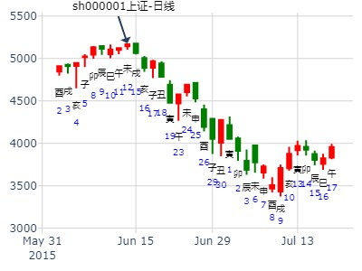
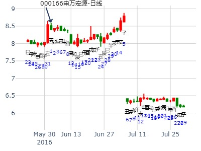
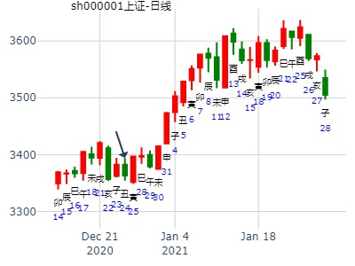

风生水起 占事：大盘未来二周
起卦方式：手动摇卦
公历时间：2016年1月6日15时21分
干 支：乙未年 己丑月 丁亥日 戊申时
旬 空：辰巳 午未 午未 寅卯
坤宫：雷天大壮（六冲）
六神 【本 卦】
青龙 ▄▄ ▄▄ 兄弟庚戌土
玄武 ▄▄ ▄▄ 子孙庚申金
白虎 ▄▄▄▄▄ 父母庚午火 世
螣蛇 ▄▄▄▄▄ 兄弟甲辰土
勾陈 ▄▄▄▄▄ 官鬼甲寅木
朱雀 ▄▄▄▄▄ 妻财甲子水 应
主帖标题: 002634棒杰股份股明天14日涨跌
14日涨跌 手摇卦
公历时间：2020年1月14日8时26分
干 支：己亥年 丁丑月 丙辰日 壬辰时
旬 空：辰巳 申酉 子丑 午未
坤宫：雷天大壮（六冲）
六神 【本 卦】
青龙 ▄▄ ▄▄ 兄弟庚戌土
玄武 ▄▄ ▄▄ 子孙庚申金
白虎 ▄▄▄▄▄ 父母庚午火 世
螣蛇 ▄▄▄▄▄ 兄弟甲辰土
勾陈 ▄▄▄▄▄ 官鬼甲寅木
朱雀 ▄▄▄▄▄ 妻财甲子水 应
主帖标题: 我占一下这股的本周内涨跌卦，以2.68论。002770
公历时间：2022年1月24日21时35分 农历时间：辛丑年 十二月二十二日亥时
干 支：辛丑年 辛丑月 丁丑日 辛亥时
旬 空：辰巳 辰巳 申酉 寅卯
坤宫：雷天大壮（六冲）
六神 【本 卦】
青龙 ▄▄ ▄▄ 兄弟庚戌土
玄武 ▄▄ ▄▄ 子孙庚申金
白虎 ▄▄▄▄▄ 父母庚午火 世
螣蛇 ▄▄▄▄▄ 兄弟甲辰土
勾陈 ▄▄▄▄▄ 官鬼甲寅木
朱雀 ▄▄▄▄▄ 妻财甲子水 应
周跌，涨，跌，跌，跌，
富乐德123月。大壮静卦。
时间: 2023-01-17
干支: 壬寅年癸丑月乙亥日 (旬空: 申酉 )
大壮静卦
玄武 ▅▅ ▅▅ 兄弟戌土
白虎 ▅▅ ▅▅ 子孙申金
腾蛇 ▅▅▅▅▅ 父母午火 世
勾陈 ▅▅▅▅▅ 兄弟辰土
朱雀 ▅▅▅▅▅ 官鬼寅木
青龙 ▅▅▅▅▅ 妻财子水 应
主帖标题: 追涨买进医药股，前景如何能赚吗
出生：1984 年 性别：男 占事：没填
公历起卦时间：2020年2月7日17时33分 (手工指定)
干支：庚子年 戊寅月 庚辰日 乙酉时 （日空：申酉）
坤宫：雷天大壮 (六冲) 坤宫：雷天大壮 (六冲)
六神 伏神 本 卦 变 卦
腾蛇 兄弟庚戌土 ▅▅ ▅▅ 兄弟庚戌土 ▅▅ ▅▅
勾陈 子孙庚申金 ▅▅ ▅▅ 子孙庚申金 ▅▅ ▅▅
朱雀 父母庚午火 ▅▅▅▅▅ 世 父母庚午火 ▅▅▅▅▅ 世
青龙 兄弟甲辰土 ▅▅▅▅▅ 兄弟甲辰土 ▅▅▅▅▅
玄武 官鬼甲寅木 ▅▅▅▅▅ 官鬼甲寅木 ▅▅▅▅▅
白虎 妻财甲子水 ▅▅▅▅▅ 应 妻财甲子水 ▅▅▅▅▅ 应
此贴未注明名字，但相关贴跟600062，300030有关。
网友评论：
提醒你：1，首先这个股业绩基本面太差了。18年每股亏0.44元。19年每股业绩几分钱。不足以支撑股价。这种股3-5元遍地都是。
2，又看卦，发现你这个卦财爻无根蒂，如果有根将来可以有机会扳回来嘛，无根之木如何生长？
建议认赔出局，换到有业绩支撑的个股上。
试测方大炭素2.25收盘走势 男 占事：没填
公历起卦时间：2021年2月25日8时23分 (电脑自动)
干支：辛丑年 庚寅月 甲辰日 戊辰时 （日空：寅卯）
坤宫：雷天大壮 (六冲) 坤宫：雷天大壮 (六冲)
玄武 兄弟庚戌土 ▅▅ ▅▅ 兄弟庚戌土 ▅▅ ▅▅
白虎 子孙庚申金 ▅▅ ▅▅ 子孙庚申金 ▅▅ ▅▅
螣蛇 父母庚午火 ▅▅▅▅▅ 世 父母庚午火 ▅▅▅▅▅ 世
勾陈 兄弟甲辰土 ▅▅▅▅▅ 兄弟甲辰土 ▅▅▅▅▅
朱雀 官鬼甲寅木 ▅▅▅▅▅ 官鬼甲寅木 ▅▅▅▅▅
青龙 妻财甲子水 ▅▅▅▅▅ 应 妻财甲子水 ▅▅▅▅▅ 应
主帖标题: 几个看好股票今天跟明天涨跌
生：没填 年 性别：男 占事：002088鲁阳节能今天跟明天涨跌
公历起卦时间：2016年3月3日6时28分 (电脑自动)
干支：丙申年 庚寅月 甲申日 丁卯时 （日空：午未）
坤宫：雷天大壮 (六冲) 坤宫：雷天大壮 (六冲)
六神 伏神 本 卦 变 卦
玄武 兄弟庚戌土 ▅▅ ▅▅ 兄弟庚戌土 ▅▅ ▅▅
白虎 子孙庚申金 ▅▅ ▅▅ 子孙庚申金 ▅▅ ▅▅
腾蛇 父母庚午火 ▅▅▅▅▅ 世 父母庚午火 ▅▅▅▅▅ 世
勾陈 兄弟甲辰土 ▅▅▅▅▅ 兄弟甲辰土 ▅▅▅▅▅
朱雀 官鬼甲寅木 ▅▅▅▅▅ 官鬼甲寅木 ▅▅▅▅▅
青龙 妻财甲子水 ▅▅▅▅▅ 应 妻财甲子水 ▅▅▅▅▅ 应

上证今日走势——乾隆币卦|上指今日走势
公历时间：2016年3月29日7时46分
干支：丙申年 辛卯月 庚戌日 庚辰时 旬空：辰巳 午未 (寅卯) 申酉
大壮静卦
腾蛇 ▅▅ ▅▅ 兄弟戌土
勾陈 ▅▅ ▅▅ 子孙申金
朱雀 ▅▅▅▅▅ 父母午火 世
青龙 ▅▅▅▅▅ 兄弟辰土
玄武 ▅▅▅▅▅ 官鬼寅木
白虎 ▅▅▅▅▅ 妻财子水 应

主帖标题: 捍卫老祖宗感通卦的尊严：测2020.3.5上证收盘走势？N06
3.5收盘十位数 godt ?
起卦方式：电脑自动 (周易世界 www.zhouyiworld.com)
公历时间：2020年3月5日8时46分
干 支：庚子年 戊寅月 丁未日 甲辰时
旬 空：辰巳 申酉 寅卯 寅卯
神 煞：驿马─巳 桃花─子 日禄─午 贵人─酉，亥
坤宫：雷天大壮（六冲）
六神 【本 卦】
青龙 ▄▄ ▄▄ 兄弟庚戌土
玄武 ▄▄ ▄▄ 子孙庚申金
白虎 ▄▄▄▄▄ 父母庚午火 世
螣蛇 ▄▄▄▄▄ 兄弟甲辰土
勾陈 ▄▄▄▄▄ 官鬼甲寅木
朱雀 ▄▄▄▄▄ 妻财甲子水 应

我收集到的3月9日到13日上证指数周卦
2。3月9日到13日上证指数
这卦是名人的卦，有人会明白的
公历时间：2020年3月7日9时7分 农历时间：庚子年 二月十四日巳时
干 支：庚子年 己卯月 己酉日 己巳时
旬 空：辰巳 申酉 寅卯 戌亥
神 煞：驿马─亥 桃花─午 日禄─午 贵人─子，申
中国预测网纳甲六爻排盘
坤宫：雷天大壮（六冲）
六神 【本 卦】
勾陈 ▄▄ ▄▄ 兄弟庚戌土
朱雀 ▄▄ ▄▄ 子孙庚申金
青龙 ▄▄▄▄▄ 父母庚午火 世
玄武 ▄▄▄▄▄ 兄弟甲辰土
白虎 ▄▄▄▄▄ 官鬼甲寅木
螣蛇 ▄▄▄▄▄ 妻财甲子水 应
原断跌，先跌后涨，终跌

南京熊猫年度走势。个股年卦：南京熊猫年度走势。雷天大壮静卦。.md
时间: 2019-04-21 22时32分
干支: 己亥年戊辰月戊子日 (旬空: 午未 )
大壮静卦
朱雀 ▅▅ ▅▅ 兄弟戌土
青龙 ▅▅ ▅▅ 子孙申金
玄武 ▅▅▅▅▅ 父母午火 世
白虎 ▅▅▅▅▅ 兄弟辰土
腾蛇 ▅▅▅▅▅ 官鬼寅木
勾陈 ▅▅▅▅▅ 妻财子水 应
请易经高手解5月28日大盘涨跌卦!
占事：5月28日大盘涨跌?
时间: 2007-05-25
干支: 丁亥年乙巳月己未日 (旬空: 子丑 )
大壮静卦
勾陈 ▅▅ ▅▅ 兄弟戌土
朱雀 ▅▅ ▅▅ 子孙申金
青龙 ▅▅▅▅▅ 父母午火 世
玄武 ▅▅▅▅▅ 兄弟辰土
白虎 ▅▅▅▅▅ 官鬼寅木
腾蛇 ▅▅▅▅▅ 妻财子水 应

主帖标题: 5月30日-6月3日大盘涨跌卦
占事：5月30日-6月3日大盘涨跌？
公历起卦时间：2011年5月27日16时26分 (手工指定)
干支：辛卯年 癸巳月 壬午日 戊申时 （日空：申酉）
坤宫：雷天大壮 (六冲) 坤宫：雷天大壮 (六冲)
六神 伏神 本 卦 变 卦
白虎 兄弟庚戌土 ▅▅ ▅▅ 兄弟庚戌土 ▅▅ ▅▅
腾蛇 子孙庚申金 ▅▅ ▅▅ 子孙庚申金 ▅▅ ▅▅
勾陈 父母庚午火 ▅▅▅▅▅ 世 父母庚午火 ▅▅▅▅▅ 世
朱雀 兄弟甲辰土 ▅▅▅▅▅ 兄弟甲辰土 ▅▅▅▅▅
青龙 官鬼甲寅木 ▅▅▅▅▅ 官鬼甲寅木 ▅▅▅▅▅
玄武 妻财甲子水 ▅▅▅▅▅ 应 妻财甲子水 ▅▅▅▅▅ 应

出生：没填 年 性别：男 占事：002797第一创业下周涨跌
排卦：元亨利贞网六爻在线排盘系统 http://www.china95.net
公历起卦时间：2016年5月22日10时31分 (电脑自动)
干支：丙申年 癸巳月 甲辰日 己巳时 （日空：寅卯）
坤宫：雷天大壮 (六冲) 坤宫：雷天大壮 (六冲)
六神 伏神 本 卦 变 卦
玄武 兄弟庚戌土 ▅▅ ▅▅ 兄弟庚戌土 ▅▅ ▅▅
白虎 子孙庚申金 ▅▅ ▅▅ 子孙庚申金 ▅▅ ▅▅
腾蛇 父母庚午火 ▅▅▅▅▅ 世 父母庚午火 ▅▅▅▅▅ 世
勾陈 兄弟甲辰土 ▅▅▅▅▅ 兄弟甲辰土 ▅▅▅▅▅
朱雀 官鬼甲寅木 ▅▅▅▅▅ 官鬼甲寅木 ▅▅▅▅▅
青龙 妻财甲子水 ▅▅▅▅▅ 应 妻财甲子水 ▅▅▅▅▅ 应
主帖标题: 5.21是涨？跌？幅度如何？（8）
时间: 2021-05-20
干支: 辛丑年癸巳月戊辰日 (旬空: 戌亥 )
上证，即时得：
坤宫：雷天大壮 (六冲) 坤宫：雷天大壮 (六冲)
六神 伏神 本 卦 变 卦
朱雀 兄弟庚戌土 ▅▅ ▅▅ 兄弟庚戌土 ▅▅ ▅▅
青龙 子孙庚申金 ▅▅ ▅▅ 子孙庚申金 ▅▅ ▅▅
玄武 父母庚午火 ▅▅▅▅▅ 世 父母庚午火 ▅▅▅▅▅ 世
白虎 兄弟甲辰土 ▅▅▅▅▅ 兄弟甲辰土 ▅▅▅▅▅
螣蛇 官鬼甲寅木 ▅▅▅▅▅ 官鬼甲寅木 ▅▅▅▅▅
勾陈 妻财甲子水 ▅▅▅▅▅ 应 妻财甲子水 ▅▅▅▅▅ 应
收阳，幅度小，接近平盘 （或许不准参考自负）

以下是引用ouzhirui在2008-6-27 22:38:00的发言：6月30日-7月4日大盘涨跌卦!
占事：6月30日-7月4日大盘涨跌?
公历时间：2008年6月27日15时13分 星期五
干支：戊子年 戊午月 戊戌日 庚申时 (旬空：辰巳)
神煞：驿马—申 桃花—卯 日禄—巳 贵人—丑，未
坤宫：雷天大壮（六冲）
朱雀 ▅▅ ▅▅ 兄弟庚戌土
青龙 ▅▅ ▅▅ 子孙庚申金
玄武 ▅▅▅▅▅ 父母庚午火 世
白虎 ▅▅▅▅▅ 兄弟甲辰土
螣蛇 ▅▅▅▅▅ 官鬼甲寅木
勾陈 ▅▅▅▅▅ 妻财甲子水 应
世应相破，兄弟暗动，总体下跌。周一跌，周二涨，周三跌，周四跌，周五涨。
主题：6月19日黄金的走势 1368
癸巳 戊午 丙辰 壬辰 (日空:子丑 时空:午未 四大空亡:金) 癸巳年五月十二(2013/06/19 08:21:08)
雷天大壮
青龙 兄弟戌土 ∥
玄武 子孙申金 ∥
白虎 父母午火 ／ 世
腾蛇 兄弟辰土 ／
勾陈 官鬼寅木 ／
朱雀 妻财子水 ／ 应
主帖标题: 6月15-19日大盘涨跌卦
占事：6月15-19日大盘涨跌？
公历起卦时间：2015年6月12日15时32分 (手工指定)
干支：乙未年 壬午月 己未日 壬申时 （日空：子丑）
坤宫：雷天大壮 (六冲) 坤宫：雷天大壮 (六冲)
六神 伏神 本 卦 变 卦
勾陈 兄弟庚戌土 ▅▅ ▅▅ 兄弟庚戌土 ▅▅ ▅▅
朱雀 子孙庚申金 ▅▅ ▅▅ 子孙庚申金 ▅▅ ▅▅
青龙 父母庚午火 ▅▅▅▅▅ 世 父母庚午火 ▅▅▅▅▅ 世
玄武 兄弟甲辰土 ▅▅▅▅▅ 兄弟甲辰土 ▅▅▅▅▅
白虎 官鬼甲寅木 ▅▅▅▅▅ 官鬼甲寅木 ▅▅▅▅▅
腾蛇 妻财甲子水 ▅▅▅▅▅ 应 妻财甲子水 ▅▅▅▅▅ 应

主帖标题: 2016年大盘
占事：000166后期趋势 排卦：HttpCN.Com六爻在线排盘系统
公历起卦时间：2016年6月1日17时42分 (电脑自动排盘)
干支：丙申年 癸巳月 甲寅日 癸酉时 （日空：子丑）
坤宫：雷天大壮 (六冲) 坤宫：雷天大壮 (六冲)
玄武 兄弟戌土 ▅▅ ▅▅ 兄弟戌土 ▅▅ ▅▅
白虎 子孙申金 ▅▅ ▅▅ 子孙申金 ▅▅ ▅▅
螣蛇 父母午火 ▅▅▅▅▅ 世 父母午火 ▅▅▅▅▅ 世
勾陈 兄弟辰土 ▅▅▅▅▅ 兄弟辰土 ▅▅▅▅▅
朱雀 官鬼寅木 ▅▅▅▅▅ 官鬼寅木 ▅▅▅▅▅
青龙 妻财子水 ▅▅▅▅▅ 应 妻财子水 ▅▅▅▅▅ 应
纳甲六爻在线排盘婚否： 出生年:1971 性别：女 占事：0001665.16-20涨跌
起卦方式：电脑自动 戌亥子丑寅
六爻排盘http://paipan.9d19.com/6y.asp
公历时间：2016年5月13日14时27分 农历时间：丙申年 四月初七日未时
干 支：丙申年 癸巳月 乙未日 癸未时
旬 空：辰巳 午未 辰巳 申酉
神 煞：驿马─巳 桃花─子 日禄─卯 贵人─子，申
算命最准的网站www.9d19.com
乾宫：火天大有（归魂） 坤宫：坤为地（六冲）
六神 【本 卦】 【变 卦】
玄武 ▄▄▄▄▄ 官鬼己巳火 应○ ▄▄ ▄▄ 兄弟癸酉金 世
白虎 ▄▄ ▄▄ 父母己未土 ▄▄ ▄▄ 子孙癸亥水
螣蛇 ▄▄▄▄▄ 兄弟己酉金 ○ ▄▄ ▄▄ 父母癸丑土
勾陈 ▄▄▄▄▄ 父母甲辰土 世○ ▄▄ ▄▄ 妻财乙卯木 应
朱雀 ▄▄▄▄▄ 妻财甲寅木 ○ ▄▄ ▄▄ 官鬼乙巳火
青龙 ▄▄▄▄▄ 子孙甲子水 ○ ▄▄ ▄▄ 父母乙未土

主帖标题: 2020.06.29日-7月3日个股000851周测
公历时间：2020年6月28日20时57分
干 支：庚子年 壬午月 壬寅日 庚戌时
旬 空：辰巳 申酉 辰巳 寅卯
坤宫：雷天大壮（六冲）
白虎 ▄▄ ▄▄ 兄弟庚戌土
螣蛇 ▄▄ ▄▄ 子孙庚申金
勾陈 ▄▄▄▄▄ 父母庚午火 世
朱雀 ▄▄▄▄▄ 兄弟甲辰土
青龙 ▄▄▄▄▄ 官鬼甲寅木
玄武 ▄▄▄▄▄ 妻财甲子水 应
周跌，一二三跌，四五涨

雷天大壮静卦，2014.7.4-7.11，IF1407六日走势（ferrari铜钱）
排卦：元亨-利贞网
公历起卦时间：2014年7月4日5时38分 (手工指定)
干支：甲午年 庚午月 丙子日 辛卯时 （日空：申酉）
坤宫：雷天大壮 (六冲) 坤宫：雷天大壮 (六冲)
六神 伏神 本 卦 变 卦
青龙 兄弟庚戌土 ▅▅ ▅▅ 兄弟庚戌土 ▅▅ ▅▅
玄武 子孙庚申金 ▅▅ ▅▅ 子孙庚申金 ▅▅ ▅▅
白虎 父母庚午火 ▅▅▅▅▅ 世 父母庚午火 ▅▅▅▅▅ 世
腾蛇 兄弟甲辰土 ▅▅▅▅▅ 兄弟甲辰土 ▅▅▅▅▅
勾陈 官鬼甲寅木 ▅▅▅▅▅ 官鬼甲寅木 ▅▅▅▅▅
朱雀 妻财甲子水 ▅▅▅▅▅ 应 妻财甲子水 ▅▅▅▅▅ 应
应爻子水月破值日，弥补了月破的大缺陷。
但是流日辰入墓， 巳日化绝， 午日月破日破，最低点。
未日涨（原因不详)
戌日涨(本来冲了辰土暗动，应是跌，只能勉强理解为收父母入墓）
729上证周卦。雷天大壮静卦
时间: 2021-07-29
干支: 辛丑年乙未月戊寅日 (旬空: 申酉 )
大壮静卦
朱雀 ▅▅ ▅▅ 兄弟戌土
青龙 ▅▅ ▅▅ 子孙申金
玄武 ▅▅▅▅▅ 父母午火 世
白虎 ▅▅▅▅▅ 兄弟辰土
腾蛇 ▅▅▅▅▅ 官鬼寅木
勾陈 ▅▅▅▅▅ 妻财子水 应
创业板走势
占事：A股创业板指数399006今日走势
起卦方式：手动摇卦-中国预测网六爻排盘
公历时间：2022年7月4日8时45分
干 支：壬寅年 丙午月 戊午日 丙辰时
旬 空：辰巳 寅卯 子丑 子丑
坤宫：雷天大壮（六冲）
六神 【本 卦】
朱雀 ▄▄ ▄▄ 兄弟庚戌土
青龙 ▄▄ ▄▄ 子孙庚申金
玄武 ▄▄▄▄▄ 父母庚午火 世
白虎 ▄▄▄▄▄ 兄弟甲辰土
螣蛇 ▄▄▄▄▄ 官鬼甲寅木
勾陈 ▄▄▄▄▄ 妻财甲子水 应
应爻旬空暗动，哪怕午月午日甲子水很弱。旬空优先

7月4日大盘。大壮静卦。应爻子水月破日破，弱极反涨。
占事：A股创业板指数399006今日走势 起卦方式：手动摇卦
公历时间：2022年7月4日8时45分
干 支：壬寅年 丙午月 戊午日 丙辰时
旬 空：辰巳 寅卯 子丑 子丑
坤宫：雷天大壮（六冲）
六神 【本 卦】
朱雀 ▄▄ ▄▄ 兄弟庚戌土
青龙 ▄▄ ▄▄ 子孙庚申金
玄武 ▄▄▄▄▄ 父母庚午火 世
白虎 ▄▄▄▄▄ 兄弟甲辰土
螣蛇 ▄▄▄▄▄ 官鬼甲寅木
勾陈 ▄▄▄▄▄ 妻财甲子水 应

创业板走势-7.26创业板指数399006走势
姓名：入定观 占事：7.26创业板指数399006走势 起卦方式：手动摇卦
公历时间：2022年7月26日7时59分
干 支：壬寅年 丁未月 庚辰日 庚辰时
旬 空：辰巳 寅卯 申酉 申酉
坤宫：雷天大壮（六冲）
螣蛇 ▄▄ ▄▄ 兄弟庚戌土
勾陈 ▄▄ ▄▄ 子孙庚申金
朱雀 ▄▄▄▄▄ 父母庚午火 世
青龙 ▄▄▄▄▄ 兄弟甲辰土
玄武 ▄▄▄▄▄ 官鬼甲寅木
白虎 ▄▄▄▄▄ 妻财甲子水 应

金玉堂问持有的山东黄金到8月底-铜钱卦
时间: 2024-07-16
干支: 甲辰年辛未月辛巳日 (旬空: 申酉 )
大壮静卦
腾蛇 ▅▅ ▅▅ 兄弟戌土
勾陈 ▅▅ ▅▅ 子孙申金
朱雀 ▅▅▅▅▅ 父母午火 世
青龙 ▅▅▅▅▅ 兄弟辰土
玄武 ▅▅▅▅▅ 官鬼寅木
白虎 ▅▅▅▅▅ 妻财子水 应
主帖标题: [原创]第五期预测上海大盘比赛8月18日到22日
公历时间：2008年8月18日9时30分 星期一农历时间：戊子年七月十八巳时
干支：戊子年 庚申月 庚寅日 辛巳时 (旬空：午未)
时间: 2008-08-18
干支: 戊子年庚申月庚寅日 (旬空: 午未 )
大壮静卦
腾蛇 ▅▅ ▅▅ 兄弟戌土
勾陈 ▅▅ ▅▅ 子孙申金
朱雀 ▅▅▅▅▅ 父母午火 世
青龙 ▅▅▅▅▅ 兄弟辰土
玄武 ▅▅▅▅▅ 官鬼寅木
白虎 ▅▅▅▅▅ 妻财子水 应
这是大盘日线K线演化的信息!
注：数理卦，娱乐
不同时间摇出两个相同的卦
出生年：1971年 性别：男 占事: 测股市
起卦方式：手工指定 周易天地www.64gua.com六爻线上排盘系统
公历时间：2012年8月24日13时54分 农历时间：壬辰年 七月初八日未时
干支：壬辰年 戊申月 丁巳日 丁未时
旬空：午未 寅卯 子丑 寅卯
神煞：驿马─亥 桃花─午 日禄─午 贵人─酉，亥
坤宫：雷天大壮（六冲）
六神 【本 卦】
青龙 ▄▄ ▄▄ 兄弟庚戌土
玄武 ▄▄ ▄▄ 子孙庚申金
白虎 ▄▄▄▄▄ 父母庚午火 世
螣蛇 ▄▄▄▄▄ 兄弟甲辰土
勾陈 ▄▄▄▄▄ 官鬼甲寅木
朱雀 ▄▄▄▄▄ 妻财甲子水 应
测股票以父母为用神，此卦摇得雷天大壮是一个六冲卦，六冲卦是涨跌都有快递之象。
世卦为震卦，应卦为乾克世卦，大的环境对股市不利。
应为子财，在月为旺，但遇日空，临朱雀，听到不利股市消息，说什么资金不足，从卦看资金还是足的，只是绝于日，资金不愿意进市场而，时机成熟还是会进来的。三爻兄辰为太岁，本卦亥财伏于兄下，临蛇说明主力正在吸筹。
午火持世，父为股票，在申月为病地，世到日是退了一位，测大盘是向后退一位，那天大盘跌了1%，深圳指数跌得更多1.75%
出生年：1971年 性别：男 占事: 中国股市的发展方向
起卦方式：手工指定 周易天地www.64gua.com六爻线上排盘系统
公历时间：2012年8月27日13时40分 农历时间：壬辰年 七月十一日未时
干支：壬辰年 戊申月 庚申日 癸未时
旬空：午未 寅卯 子丑 申酉
神煞：驿马─寅 桃花─酉 日禄─申 贵人─丑，未
坤宫：雷天大壮（六冲） 坤宫：泽天夬
六神 【本 卦】 【变 卦】
螣蛇 ▄▄ ▄▄ 兄弟庚戌土 ▄▄ ▄▄ 兄弟丁未土
勾陈 ▄▄ ▄▄ 子孙庚申金 X-> ▄▄▄▄▄ 子孙丁酉金 世
朱雀 ▄▄▄▄▄ 父母庚午火 世 ▄▄▄▄▄ 妻财丁亥水
青龙 ▄▄▄▄▄ 兄弟甲辰土 ▄▄▄▄▄ 兄弟甲辰土
玄武 ▄▄▄▄▄ 官鬼甲寅木 ▄▄▄▄▄ 官鬼甲寅木 应
白虎 ▄▄▄▄▄ 妻财甲子水 应 ▄▄▄▄▄ 妻财甲子水
今天股票在度向下，未时在摇一卦，大盘的方向，结果又得一个雷天大壮，不过有变卦。从大的方向还是没有改变，午火绝于日月，股票在短期内是难以上涨，午火从明年开始走旺，明年有一个较大的反弹价情，最旺于2014年，说明长期的股票是可以看好的，但这个时间是漫长的。
应为子水财空，年为太岁月不申发动化成水，兄收水入库，说明主力大量吸筹。也就等时机而动。
这一卦多了一个动爻，第五爻发动。动必有因，五爻为主管领导部门，化进有一些新的政策，扶持股市，时间以很接近，快递就今天与明天，慢到下个酉月。这种政策对股价相对有利。但股票要大涨还是时机没到。在酉月与戌月会有一个反弹行情出现。
今日午火遇绝日，今日跌幅更大，现在参与股票是难有收获的，总之现在都是一个寻底行情。总之现在有资金，做长线的人可以介入。

占事：铁路运输龙头股 作者：悟道喜悦
起卦方式：手动摇卦 易经股市论坛
www.yijingstock.com 在线排盘系统
公历时间：2014年8月4日11时7分
干 支：甲午年 辛未月 丁未日 丙午时
旬 空：辰巳 戌亥 (寅卯) 寅卯
坤宫：雷天大壮（六冲）
六神 【本 卦】
青龙 ▄▄ ▄▄ 兄弟庚戌土
玄武 ▄▄ ▄▄ 子孙庚申金
白虎 ▄▄▄▄▄ 父母庚午火 世
螣蛇 ▄▄▄▄▄ 兄弟甲辰土
勾陈 ▄▄▄▄▄ 官鬼甲寅木
朱雀 ▄▄▄▄▄ 妻财甲子水 应
主题：上证指数在申月的走势2014.8.6—乾隆通宝手摇卦
甲午 辛未 己酉 乙亥 (寅卯空) 甲午年七月十一(2014/08/06 22:23:00)
雷天大壮
勾陈 兄弟戌土 ∥
朱雀 子孙申金 ∥
青龙 父母午火 ／ 世
玄武 兄弟辰土 ／
白虎 官鬼寅木 ／
腾蛇 妻财子水 ／ 应
卦主：招财进宝 占事：科士达 后俩月走势
公历起卦时间：2014年8月20日8时47分 (在线摇卦)
干支：甲午年 壬申月 癸亥日 丙辰时 （日空：子丑）
坤宫：雷天大壮 (六冲) 坤宫：雷天大壮 (六冲)
六神 伏神 本 卦 变 卦
白虎 兄弟庚戌土 ▅▅ ▅▅ 兄弟庚戌土 ▅▅ ▅▅
腾蛇 子孙庚申金 ▅▅ ▅▅ 子孙庚申金 ▅▅ ▅▅
勾陈 父母庚午火 ▅▅▅▅▅ 世 父母庚午火 ▅▅▅▅▅ 世
朱雀 兄弟甲辰土 ▅▅▅▅▅ 兄弟甲辰土 ▅▅▅▅▅
青龙 官鬼甲寅木 ▅▅▅▅▅ 官鬼甲寅木 ▅▅▅▅▅
玄武 妻财甲子水 ▅▅▅▅▅ 应 妻财甲子水 ▅▅▅▅▅ 应
用神应爻空，要等子月才能涨。

8月7日大盘。雷天大壮静卦。
时间: 2015-08-07 7时56分
干支: 乙未年癸未月乙卯日 (旬空: 子丑 )
大壮静卦
玄武 ▅▅ ▅▅ 兄弟戌土
白虎 ▅▅ ▅▅ 子孙申金
腾蛇 ▅▅▅▅▅ 父母午火 世
勾陈 ▅▅▅▅▅ 兄弟辰土
朱雀 ▅▅▅▅▅ 官鬼寅木
青龙 ▅▅▅▅▅ 妻财子水 应
占事：中国银行下周走势
公历起卦时间：2015年9月4日23时21分 (手工指定)
干支：乙未年 甲申月 甲申日甲子时 （日空：午未）
坤宫：雷天大壮 (六冲) 坤宫：雷天大壮 (六冲)
玄武 兄弟庚戌土 ▅▅ ▅▅ 兄弟庚戌土 ▅▅ ▅▅
白虎 子孙庚申金 ▅▅ ▅▅ 子孙庚申金 ▅▅ ▅▅
腾蛇 父母庚午火 ▅▅▅▅▅ 世 父母庚午火 ▅▅▅▅▅ 世
勾陈 兄弟甲辰土 ▅▅▅▅▅ 兄弟甲辰土 ▅▅▅▅▅
朱雀 官鬼甲寅木 ▅▅▅▅▅ 官鬼甲寅木 ▅▅▅▅▅
青龙 妻财甲子水 ▅▅▅▅▅ 应 妻财甲子水 ▅▅▅▅▅ 应
主帖标题: 下周生物医药
主题：医药财运
壬寅年戊申月己未日乙亥时(子丑空) 壬寅年七月十一(2022/09/03 21:47)
雷天大壮
勾陈 兄弟戌土 ∥
朱雀 子孙申金 ∥
青龙 父母午火 ／ 世
玄武 兄弟辰土 ／
白虎 官鬼寅木 ／
腾蛇 妻财子水 ／ 应
--分析与结论--
本周{周五------周五}
天风证券到9月底-金-硬币卦-见底吉卦
时间: 2024-09-13
干支: 甲辰年癸酉月庚辰日 (旬空: 申酉 )
大壮静卦
腾蛇 ▅▅ ▅▅ 兄弟戌土
勾陈 ▅▅ ▅▅ 子孙申金
朱雀 ▅▅▅▅▅ 父母午火 世
青龙 ▅▅▅▅▅ 兄弟辰土
玄武 ▅▅▅▅▅ 官鬼寅木
白虎 ▅▅▅▅▅ 妻财子水 应
求测人：某人，男，辛亥(1971年)，电脑摇卦(起卦方式)
占问事宜：19-23大盘
公历：2015年10月16日14时38分，星期五。
干支：乙未年 丙戌月 乙丑日 癸未时 (卦身：卯)
主变卦 雷天大壮(坤宫) [空亡:戌、亥]
玄武 ▅▅ ▅▅ 兄弟庚戌土
白虎 ▅▅ ▅▅ 子孙庚申金
螣蛇 ▅▅▅▅▅ 父母庚午火 世
勾陈 ▅▅▅▅▅ 兄弟甲辰土
朱雀 ▅▅▅▅▅ 官鬼甲寅木
青龙 ▅▅▅▅▅ 妻财甲子水 应
主帖标题: 发现一放大量股002795，占今后一周内走势
感觉好不了，不一定入手。姓名： 出生年:1981 性别：男 占事：起卦方式：手动摇卦
公历时间：2019年10月15日18时32分
干 支：己亥年 甲戌月 乙酉日 乙酉时
旬 空：辰巳 申酉 午未 午未
大壮静卦
玄武 ▅▅ ▅▅ 兄弟戌土
白虎 ▅▅ ▅▅ 子孙申金
腾蛇 ▅▅▅▅▅ 父母午火 世
勾陈 ▅▅▅▅▅ 兄弟辰土
朱雀 ▅▅▅▅▅ 官鬼寅木
青龙 ▅▅▅▅▅ 妻财子水 应
求测事情：300261,今天走势
公历：2020-10-12 09:42 甲申旬 午未空
干支：庚子年丙戌月戊子日丁巳时
雷天大壮(坤宫 )
▄▄ ▄▄庚戌土兄弟 朱雀
▄▄ ▄▄庚申金子孙 青龙
世▄▄▄▄▄庚午火父母 玄武
▄▄▄▄▄甲辰土兄弟 白虎
▄▄▄▄▄甲寅木官鬼 滕蛇
应▄▄▄▄▄甲子水妻财 勾陈

2021年九阳股份戌亥子丑月，雷天大壮静卦
时间: 2021-10-13
干支: 辛丑年戊戌月甲午日 (旬空: 辰巳 )
大壮静卦
玄武 ▅▅ ▅▅ 兄弟戌土
白虎 ▅▅ ▅▅ 子孙申金
腾蛇 ▅▅▅▅▅ 父母午火 世
勾陈 ▅▅▅▅▅ 兄弟辰土
朱雀 ▅▅▅▅▅ 官鬼寅木
青龙 ▅▅▅▅▅ 妻财子水 应
600330下周行情
2011年 11月 13日 11时 19分 (起卦方式：手动指定)600330下周行情
元亨利贞网六爻排盘程序 http://www.china95.net
干支：辛卯年 己亥月 壬申日 丙午时 日空亡：戌亥
神煞：驿马－寅 桃花－酉 日禄－亥 贵人－卯，巳
坤宫：雷天大壮 (六冲)
六神 伏神 本 卦
白虎 兄弟戌土 ▅▅ ▅▅
螣蛇 子孙申金 ▅▅ ▅▅
勾陈 父母午火 ▅▅▅▅▅ 世
朱雀 兄弟辰土 ▅▅▅▅▅
青龙 官鬼寅木 ▅▅▅▅▅
玄武 妻财子水 ▅▅▅▅▅ 应
男 占事：300087荃银高科21日涨跌
公历起卦时间：2013年11月20日15时5分 (电脑自动)
干支：癸巳年 癸亥月 庚寅日 甲申时 （日空：午未）
坤宫：雷天大壮 (六冲) 坤宫：雷天大壮 (六冲)
六神 伏神 本 卦 变 卦
腾蛇 兄弟庚戌土 ▅▅ ▅▅ 兄弟庚戌土 ▅▅ ▅▅
勾陈 子孙庚申金 ▅▅ ▅▅ 子孙庚申金 ▅▅ ▅▅
朱雀 父母庚午火 ▅▅▅▅▅ 世 父母庚午火 ▅▅▅▅▅ 世
青龙 兄弟甲辰土 ▅▅▅▅▅ 兄弟甲辰土 ▅▅▅▅▅
玄武 官鬼甲寅木 ▅▅▅▅▅ 官鬼甲寅木 ▅▅▅▅▅
白虎 妻财甲子水 ▅▅▅▅▅ 应 妻财甲子水 ▅▅▅▅▅ 应

占事: 000001上证指数11-3至11-7日一周趋势预测
起卦方式：手工指定 周易天地www.64gua.com六爻线上排盘系统
公历时间：2014年11月3日9时30分 农历时间：甲午年 闰 九月十一日巳时
干支：甲午年 甲戌月 戊寅日 丁巳时
旬空：辰巳 申酉 申酉 子丑
神煞：驿马─申 桃花─卯 日禄─巳 贵人─丑，未
坤宫：雷天大壮（六冲）
六神 【本 卦】
朱雀 ▄▄ ▄▄ 兄弟庚戌土
青龙 ▄▄ ▄▄ 子孙庚申金
玄武 ▄▄▄▄▄ 父母庚午火 世
白虎 ▄▄▄▄▄ 兄弟甲辰土
螣蛇 ▄▄▄▄▄ 官鬼甲寅木
勾陈 ▄▄▄▄▄ 妻财甲子水 应
预测结论请关注二楼
协鑫集成11月第3周。雷天大壮静卦。.md
时间: 2015-11-10
干支: 乙未年丁亥月庚寅日 (旬空: 午未 )
大壮静卦
腾蛇 ▅▅ ▅▅ 兄弟戌土
勾陈 ▅▅ ▅▅ 子孙申金
朱雀 ▅▅▅▅▅ 父母午火 世
青龙 ▅▅▅▅▅ 兄弟辰土
玄武 ▅▅▅▅▅ 官鬼寅木
白虎 ▅▅▅▅▅ 妻财子水 应
起卦日寅冲申暗动（不算太标准，第二天就涨停）
下周买入此股2个月内有赚钱机会吗
占事：601949 未来2月
排卦：元亨利贞网六爻在线排盘系统 https://www.china95.net
公历起卦时间：2021年11月14日16时38分 (手工指定)
干支：辛丑年 己亥月 丙寅日 丙申时 （日空：戌亥）
坤宫：雷天大壮 (六冲) 坤宫：雷天大壮 (六冲)
青龙 兄弟庚戌土 ▅▅ ▅▅ 兄弟庚戌土 ▅▅ ▅▅
玄武 子孙庚申金 ▅▅ ▅▅ 子孙庚申金 ▅▅ ▅▅
白虎 父母庚午火 ▅▅▅▅▅ 世 父母庚午火 ▅▅▅▅▅ 世
螣蛇 兄弟甲辰土 ▅▅▅▅▅ 兄弟甲辰土 ▅▅▅▅▅
勾陈 官鬼甲寅木 ▅▅▅▅▅ 官鬼甲寅木 ▅▅▅▅▅
朱雀 妻财甲子水 ▅▅▅▅▅ 应 妻财甲子水 ▅▅▅▅▅ 应
男 占事：002555顺荣股份4日涨跌
公历起卦时间：2013年12月3日15时4分 (电脑自动)
干支：癸巳年 癸亥月 癸卯日 庚申时 （日空：辰巳）
坤宫：雷天大壮 (六冲)
六神 伏神 本 卦 变 卦
白虎 兄弟庚戌土 ▅▅ ▅▅ 兄弟庚戌土 ▅▅ ▅▅
腾蛇 子孙庚申金 ▅▅ ▅▅ 子孙庚申金 ▅▅ ▅▅
勾陈 父母庚午火 ▅▅▅▅▅ 世 父母庚午火 ▅▅▅▅▅ 世
朱雀 兄弟甲辰土 ▅▅▅▅▅ 兄弟甲辰土 ▅▅▅▅▅
青龙 官鬼甲寅木 ▅▅▅▅▅ 官鬼甲寅木 ▅▅▅▅▅
玄武 妻财甲子水 ▅▅▅▅▅ 应 妻财甲子水 ▅▅▅▅▅ 应

男 占事：601028玉龙股份13日涨跌
公历起卦时间：2013年12月12日15时26分 (电脑自动)
干支：癸巳年 甲子月 壬子日 戊申时 （日空：寅卯）
坤宫：雷天大壮 (六冲) 坤宫：雷天大壮 (六冲)
六神 伏神 本 卦 变 卦
白虎 兄弟庚戌土 ▅▅ ▅▅ 兄弟庚戌土 ▅▅ ▅▅
腾蛇 子孙庚申金 ▅▅ ▅▅ 子孙庚申金 ▅▅ ▅▅
勾陈 父母庚午火 ▅▅▅▅▅ 世 父母庚午火 ▅▅▅▅▅ 世
朱雀 兄弟甲辰土 ▅▅▅▅▅ 兄弟甲辰土 ▅▅▅▅▅
青龙 官鬼甲寅木 ▅▅▅▅▅ 官鬼甲寅木 ▅▅▅▅▅
玄武 妻财甲子水 ▅▅▅▅▅ 应 妻财甲子水 ▅▅▅▅▅ 应

主帖标题: 上证指数141228----141231
方式：手工指定
公历：2014年12月26日15时19分 星期五 北京时间
干支：甲午年 丙子月 辛未日 丙申时
旬空：辰巳 申酉 戌亥 辰巳
子月 辛未日 （旬空：戌亥）
坤：雷天大壮(六冲)
螣蛇 ▅▅ ▅▅ 兄弟庚戌土(钗钏金)
勾陈 ▅▅ ▅▅ 子孙庚申金(石榴木)
朱雀 ▅▅▅▅▅ 父母庚午火(路边土) 世
青龙 ▅▅▅▅▅ 兄弟甲辰土(佛灯火)
玄武 ▅▅▅▅▅ 官鬼甲寅木(大溪水)
白虎 ▅▅▅▅▅ 妻财甲子水(海中金) 应

--同期参考：
占事: 000001上证指数12-29至12-31趋势?起卦方式：手工指定
公历时间：2014年12月29日9时30分???
干支：甲午年丙子月甲戌日己巳时
旬空：辰巳 申酉 申酉 戌亥
艮宫：风泽中孚（游魂） 巽宫：风雷益?
玄武? ? ? ? ? ? ? ▄▄▄▄▄? 官鬼辛卯木? ? ? ? ? ▄▄▄▄▄? 官鬼辛卯木? 应
白虎? 妻财丙子水? ▄▄▄▄▄? 父母辛巳火? ? ? ? ? ▄▄▄▄▄? 父母辛巳火? ?
螣蛇? ? ? ? ? ? ? ▄▄??▄▄? 兄弟辛未土? 世? ? ? ▄▄??▄▄? 兄弟辛未土? ?
勾陈? 子孙丙申金? ▄▄??▄▄? 兄弟丁丑土? ? ? ? ? ▄▄??▄▄? 兄弟庚辰土? 世
朱雀? ? ? ? ? ? ? ▄▄▄▄▄? 官鬼丁卯木? ? O?>?? ▄▄??▄▄? 官鬼庚寅木? ?
青龙? ? ? ? ? ? ? ▄▄▄▄▄? 父母丁巳火? 应? ? ? ▄▄▄▄▄? 妻财庚子水? ?
九二：鸣鹤在阴，其子和之，我有好爵，吾与尔靡之。
象曰：其子和之，中心愿也。
戌日动而逢合，高开低走。??子日伏神透出涨。
占事：601968子月
起卦方式：手动摇卦
公历时间：2016年12月10日18时43分
丙申年 庚子月 丙寅日 丁酉时 旬空：辰巳 辰巳 (戌亥) 辰巳
坤宫：雷天大壮（六冲）
六神 【本 卦】
青龙 ▄▄ ▄▄ 兄弟庚戌土
玄武 ▄▄ ▄▄ 子孙庚申金
白虎 ▄▄▄▄▄ 父母庚午火 世
螣蛇 ▄▄▄▄▄ 兄弟甲辰土
勾陈 ▄▄▄▄▄ 官鬼甲寅木
朱雀 ▄▄▄▄▄ 妻财甲子水 应
上证指数周卦（2019-12-30至2020-1-3）趋势预测--更改为上涨，上攻3080
上证指数周卦
公历起卦时间：2019年12月30日9时18分 (手工指定)
干支：己亥年 丙子月 辛丑日 癸巳时 （日空：辰巳）
神煞：驿马－亥 桃花－午 日禄－酉 贵人－寅，午
坤宫：雷天大壮 (六冲) 坤宫：雷天大壮 (六冲)
六神 伏神 本 卦 变 卦
腾蛇 兄弟庚戌土 ▅▅ ▅▅ 兄弟庚戌土 ▅▅ ▅▅
勾陈 子孙庚申金 ▅▅ ▅▅ 子孙庚申金 ▅▅ ▅▅
朱雀 父母庚午火 ▅▅▅▅▅ 世 父母庚午火 ▅▅▅▅▅ 世
青龙 兄弟甲辰土 ▅▅▅▅▅ 兄弟甲辰土 ▅▅▅▅▅
玄武 官鬼甲寅木 ▅▅▅▅▅ 官鬼甲寅木 ▅▅▅▅▅
白虎 妻财甲子水 ▅▅▅▅▅ 应 妻财甲子水 ▅▅▅▅▅ 应
方大炭素12.1戊寅二--12.3庚辰哪日顶？
出生：2020 年 性别：男 占事：没填
排卦：中国周易研究会网六爻在线排盘系统 https://www.suan98.com
公历起卦时间：2020年12月2日8时50分 (电脑自动)
干支：庚子年 丁亥月 己卯日 戊辰时 （日空：申酉）
神煞：驿马－巳 桃花－子 日禄－午 贵人－子，申
坤宫：雷天大壮 (六冲) 坤宫：雷天大壮 (六冲)
六神 伏神 本 卦 变 卦
勾陈 兄弟庚戌土 ▅▅ ▅▅ 兄弟庚戌土 ▅▅ ▅▅
朱雀 子孙庚申金 ▅▅ ▅▅ 子孙庚申金 ▅▅ ▅▅
青龙 父母庚午火 ▅▅▅▅▅ 世 父母庚午火 ▅▅▅▅▅ 世
玄武 兄弟甲辰土 ▅▅▅▅▅ 兄弟甲辰土 ▅▅▅▅▅
白虎 官鬼甲寅木 ▅▅▅▅▅ 官鬼甲寅木 ▅▅▅▅▅
螣蛇 妻财甲子水 ▅▅▅▅▅ 应 妻财甲子水 ▅▅▅▅▅ 应

主帖标题: 12月7至12月11日大盘预测(日测)
周一今天涨跌
公历时间：2020年12月7日8时10分 农历时间：庚子年 十月二十三日辰时
干 支：庚子年 戊子月 甲申日 戊辰时
旬 空：辰巳 午未 午未 戌亥
坤宫：雷天大壮（六冲）
六神 【本 卦】
玄武 ▄▄ ▄▄ 兄弟庚戌土
白虎 ▄▄ ▄▄ 子孙庚申金
螣蛇 ▄▄▄▄▄ 父母庚午火 世
勾陈 ▄▄▄▄▄ 兄弟甲辰土
朱雀 ▄▄▄▄▄ 官鬼甲寅木
青龙 ▄▄▄▄▄ 妻财甲子水 应

Q试测庚子年子月上证顶？
试测庚子年子月上证顶tkmg？
排卦：元亨利贞网六爻在线排盘系统 https://www.china95.net
公历起卦时间：2020年12月24日13时1分 (电脑自动)
干支：庚子年 戊子月 辛丑日 乙未时 （日空：辰巳）
神煞：驿马－亥 桃花－午 日禄－酉 贵人－寅，午
坤宫：雷天大壮 (六冲) 坤宫：雷天大壮 (六冲)
六神 伏神 本 卦 变 卦
螣蛇 兄弟庚戌土 ▅▅ ▅▅ 兄弟庚戌土 ▅▅ ▅▅
勾陈 子孙庚申金 ▅▅ ▅▅ 子孙庚申金 ▅▅ ▅▅
朱雀 父母庚午火 ▅▅▅▅▅ 世 父母庚午火 ▅▅▅▅▅ 世
青龙 兄弟甲辰土 ▅▅▅▅▅ 兄弟甲辰土 ▅▅▅▅▅
玄武 官鬼甲寅木 ▅▅▅▅▅ 官鬼甲寅木 ▅▅▅▅▅
白虎 妻财甲子水 ▅▅▅▅▅ 应 妻财甲子水 ▅▅▅▅▅ 应
